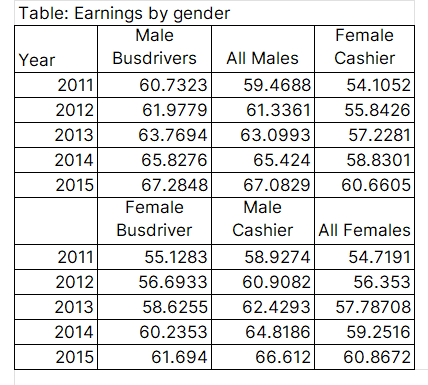

Most people don’t think about tables when they think about data visualization. But tables deserve as much attention as you put in your charts. To effectively communicate the message in your data, it’s important to understand the rules for presenting data in tables.
Let me load the dataset so we can see the raw data.
import polars as plimport polars.selectors as csfrom pathlib import Pathdf = pl.read_parquet(f"{Path('../../')}/datasets/gender_earnings.parquet")df
shape: (5, 7)
Year
All_Males
All_Females
Male_Busdrivers
Female_Busdriver
Male_Cashier
Female_Cashier
i16
f32
f32
f32
f32
f32
f32
2011
59.4688
54.719101
60.7323
55.1283
58.927399
54.105202
2012
61.336102
56.353001
61.977901
56.693298
60.908199
55.842602
2013
63.0993
57.787083
63.769402
58.6255
62.429298
57.2281
2014
65.424004
59.251598
65.827599
60.235298
64.818604
58.830101
2015
67.082901
60.867199
67.284798
61.694
66.612
60.6605
Now let me show you a poorly designed table that attempts to communicate some insights from the raw data, then I’ll walk you through the process of improving it.

Figure 1: a poorly designed table
Figure 1 shows all the data we need to see, yet it’s hard to understand what is going on. The message is not easily communicated, meaning you’ll have to spend more time on the table to understand the message.
To begin with, it has two headers that break in the middle of the table. There must be a way to combine these headers, especially since the values in Year are repeating.
We can also group columns based on the category. For example, cashier can have males (Men) and females (Women) together.
Let’s see how incorporating the above points can make our table look better and thus communicate our message effectively. I’ll use the great-tables library to redesign Figure 1.
from great_tables import GT, html( GT(df, rowname_col='Year') .tab_header(title=html("<h4>Average earnings for men and women,<br>overall and by occupation</h4>")) .cols_label(All_Males=html('<b style="color: grey;">Men</b>'), All_Females=html('<b style="color: grey;">Women</b>'), Male_Busdrivers=html('<b style="color: grey;">Men</b>'), Female_Busdriver=html('<b style="color: grey;">Women</b>'), Male_Cashier=html('<b style="color: grey;">Men</b>'), Female_Cashier=html('<b style="color: grey;">Women</b>'), ) .tab_spanner(label=html("<b>All</b>"), columns=['All_Males', 'All_Females']) .tab_spanner(label=html("<b>Busdrivers</b>"), columns=['Male_Busdrivers', 'Female_Busdriver']) .tab_spanner(label=html("<b>Cashiers</b>"), columns=['Male_Cashier', 'Female_Cashier']))
Average earnings for men and women,
overall and by occupation
All
Busdrivers
Cashiers
Men
Women
Men
Women
Men
Women
2011
59.4688
54.7191
60.7323
55.1283
58.9274
54.1052
2012
61.3361
56.353
61.9779
56.6933
60.9082
55.8426
2013
63.0993
57.787083
63.7694
58.6255
62.4293
57.2281
2014
65.424
59.2516
65.8276
60.2353
64.8186
58.8301
2015
67.0829
60.8672
67.2848
61.694
66.612
60.6605
Figure 2: a better designed table
In Figure 2 I removed the bottom header to only remain with one header and created hierarchies in that header. Reading from left to right, the first hierarchy in the header contains the values All, Busdrivers, and Cashiers. Since these values in the first hierarchy contain categories; men and women, I have grouped those categories under each of them.
The benefit of using a hierarchical table is that it gives insights into conditionals. For example, we can ask: What is the average wage for a cashier conditional on being a woman? Answering this question is easy when the data is presented like in Figure 2, but not in Figure 1.
We can increase the readability of Figure 2 by using adjusting whitespace between the spaces of the columns in the table.
We can further differentiate between the two hierarchies in the header with color. I’ll use grey for the second hierarchy.
To make the appearance of numbers in the table consistent I’ll round them all to 1 decimal place.
Lastly, I’ll add a footnote to show the source of our data.
from great_tables import GT, md, htmlset_width ='15%'width_dict = {col: set_width for col in df.columns}( GT(df, rowname_col='Year') .tab_header(title=html("<h4>Average earnings for men and women,<br>overall and by occupation</h4>")) .tab_source_note( source_note=md("**Note**: Data is simulated. The units is guavas.") ) .cols_label(All_Males=html('<b style="color: grey;">Men</b>'), All_Females=html('<b style="color: grey;">Women</b>'), Male_Busdrivers=html('<b style="color: grey;">Men</b>'), Female_Busdriver=html('<b style="color: grey;">Women</b>'), Male_Cashier=html('<b style="color: grey;">Men</b>'), Female_Cashier=html('<b style="color: grey;">Women</b>'), ) .tab_spanner(label=html("<b>All</b>"), columns=['All_Males', 'All_Females']) .tab_spanner(label=html("<b>Busdrivers</b>"), columns=['Male_Busdrivers', 'Female_Busdriver']) .tab_spanner(label=html("<b>Cashiers</b>"), columns=['Male_Cashier', 'Female_Cashier']) .fmt_number(columns=cs.float(), decimals=1, use_seps=False) .cols_width(cases=width_dict))
Average earnings for men and women,
overall and by occupation
All
Busdrivers
Cashiers
Men
Women
Men
Women
Men
Women
2011
59.5
54.7
60.7
55.1
58.9
54.1
2012
61.3
56.4
62.0
56.7
60.9
55.8
2013
63.1
57.8
63.8
58.6
62.4
57.2
2014
65.4
59.3
65.8
60.2
64.8
58.8
2015
67.1
60.9
67.3
61.7
66.6
60.7
Note: Data is simulated. The units is guavas.
Figure 3: an even better designed table
Enroll in my Polars course to perfect your data analysis skills with this new and fast dataframe library.